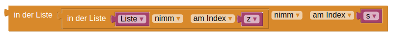
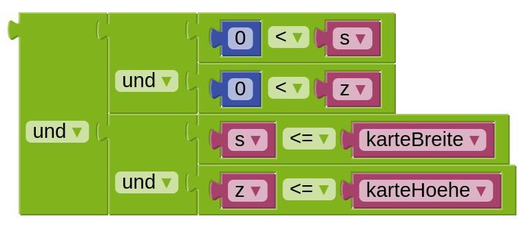
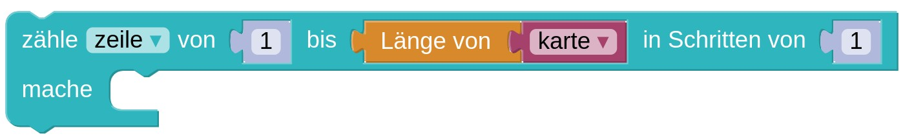
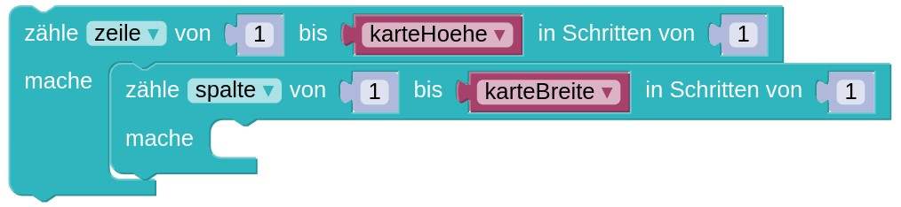

Das Programm soll eine Schatzkarte als Liste einlesen und zählen, wie viele Schätze höchstens gefunden werden können.
Nur an Stellen, die mit "?" markiert sind, kann ein Schatz gefunden werden. Die Stellen, die mit "B" markiert sind, sind Bäume. Jeder Schatz liegt direkt neben (mindestens) einem Baum vergraben. Unter einem Baum können mehrere Schätze vergraben sein. An restlichen Stellen " " kann kein Schatz gefunden werden.
Die Karte besteht aus einer Zeile. Wir wissen, dass am Rand der Karte (ganz links und rechts außen) keine Schätze vergraben sein können.
Die Karte besteht aus drei Zeilen. Nur in der mittleren Zeile sind mögliche Positionen von Schätzen ("?"). Außerdem stehen keine "?" am Rand der Karte.
Die Karte besteht jetzt aus jeweils 8 Zeilen und Spalten, in denen überall Schätze liegen können.
Lese die Karte in eine große (Gesamt-)Liste ein: Die Zeilen sollen nacheinander in der Liste stehen. Jede Zeile enthält selbst als Liste alle Positionen in dieser Reihe (also " ", "?" oder "B").
Am Rand der Karte befinden sich keine "?"-Markierungen.
Nun können sich auch am Rand mögliche Schätze ("?") befinden.
Gib die maximale Anzahl an Schätzen aus, die gefunden werden kann.
Unter "weitere Hinweise" findest du Erklärungen zum Arbeiten mit der Karte und Ideen für deinen Algorithmus.
Weitere Hinweise:
Du kannst die Karte als Liste speichern, in der du als Einträge die Zeilen der Karte speicherst. Entweder kannst du diese als Text speichern, oder als Liste aus Zeichen " ", "?" und "B". Falls du letztere Möglichkeit wählst, bietet sich der Baustein Liste aus Text erstellen an. Dieser wandelt einen Text in eine Liste um, wenn du als Trennzeichen "" (nichts) angibst, wird jedes Zeichen ein eigener Eintrag der Liste.
Zum Beispiel könntest du so die erste Zeile der Karte einlesen:

Auf das Element in Zeile z, Spalte s in einer Liste von Listen greifen wir so zu:

...der Codeblock, der hier oben in der Mitte steckt, holt uns übrigens die gesamte Zeile z:
Wenn man die Karte jedoch als Liste, in der Texte gespeichert sind, umsetzt, kann man sich den Eintrag in Zeile z, Spalte s so holen:

Um auf Nachbarfelder eines Eintrags in der Karte zuzugreifen, können wir nach Belieben bei dem Zeilen- und/oder Spaltenindex 1 addieren oder subtrahieren.
Allerdings muss man hier aufpassen, dass die Nachbarn von Einträgen, die selbst am Rand der Karte liegen, nicht mehr auf der Karte abgebildet sind.
Bevor wir also auf Nachbarn zugreifen, sollten wir also prüfen, ob diese Nachbarzellen noch in der Karte liegen. Das ist genau dann der Fall, wenn der Zeilen- und Spaltenindex jeweils echt größer als 0 sind sowie der Zeilenindex kleinergleich der Höhe, der Spaltenindex kleinergleich der Breite der Karte sind. Das können wir zum Beispiel so prüfen:

Eine Liste kann man von links nach rechts durchlaufen, beispielsweise mit einer Schleife der folgenden Form:

Wenn die Liste zweidimensional wird, also eine Liste von Listen ist, kann man für jede Zeile alle Spalten durchlaufen:
